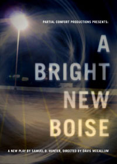

past performancePartial Comfort Productions Presents: A New Play by Samuel D. Hunter Directed By Davis McCallum |
reviews:"Directed with a firm hand by Davis McCallum and designed with pinpoint accuracy by Jason Simms, the production comes to the Wild Project, an increasingly interesting Lower East Side home for new work, from the resident collaborative ensemble Partial Comfort Productions, of which Mr. Hunter is a member. ...the five-member cast is uniformly strong and sympathetic." "Despite the crisp wind of despair that blows all through Samuel D. Hunter's beautifully realized A Bright New Boise, this clear-eyed comedy about faith's meager harvest will still lift your heart. Some of it is simple delight in craft: Even the first glimpse of designer Jason Simms's dead-on replica of a bleak Hobby Lobby break room assures us that we are in deft hands. The rest of our pleasures lie in Hunter's gentle characterizations, a plot that mingles absurdity and genuine philosophical investigation, and a full complement of smashing comic performances". "It is rare when all the elements of a theatrical production fall perfectly into place, the script, cast, direction, technical elements and even venue all aligning to make a flawless evening of theatre. It's a lot to ask, but that is precisely what has happened with Partial Comfort Productions' A Bright New Boise by Samuel D. Hunter. ... The ensemble is perfectly cast and I don't think I can say enough about each individual actor's work. Davis McCallum's direction is my favorite kind: simplistic and rich." "Absolutely Amazing! Incredibly Funny and Profound at the same time! The story and the actors leave you asking: Why isn't All Theatre this good anymore?" "Samuel D. Hunter has effectively rendered himself a playwright to watch with A Bright New Boise, at the Wild Project, a quietly affecting drama that delves into the always thorny issues of faith, forgiveness, and second chances with great eloquence and compassion. Moreover, director Davis McCallum and his eminently capable ensemble have created a world premiere production that pulses with electric performances that are as honest as a hard day's work at minimum wage. ...McCallum takes his cast to beautifully nuanced heights" "I loved this show like nobody's business. I loved this show like my life depended on it. You should go and see it. Like, seriously ... This play was a commissioned work from Partial Comfort and it shows that there's been some care and feeding of it and Sam. Not to mention a packed house that was a better cross-section of this city than I've seen in a theatre in a long while. Like I said, I know the Partial Comfort folks and still, I don't give them enough credit for being a multicultural, wider-spanning-than-you-think group. They're going about their business, doing the work, and clearly, doing something right. So kudos to y'all, guys. Well-played. This is what I mean by Holy Sh*t theatre: my jaw was on the floor about five minutes into it and stayed there. Not by the power of "theatricality" or some great stage trick, but by dialogue, by a powerful reveal that changes everything you think about what you've seen. And it didn't let up from there. I never knew where this play was going or what it was going to pull out of the box next. I just trusted it implicitly. That trust was rewarded." "Hunter fills out these mundane lives and locales with superb details and compassion, and director Davis McCallum (who also helmed Five Genocides) makes transitions from family drama into workplace comedy quick and smooth. Save the very effective whooshing sounds that beam us into every scene, like a TV zapping to life before the screen lights up, Boise adheres more closely to strict realism than Precious Moments and Five Genocides. The excellent cast stretches the emotional verisimilitude a little when the play's at its funniest-which is quite often-while Will and Anna's tentative chemistry resonates especially well in the calmer passages". "... it's a remarkably clear-eyed look at heartland America, here seen as an overbuilt landscape covered with big-box stores and fast-food joints where life is defined by the scramble to survive on the minimum wage. ... Hunter's skill with his characters ensures that no one is patronized, and Davis McCallum's remarkably polished production maintains a fine balance between the script's out-of-left-field humor and its profound sadness. There's fine work from the cast, and all this solid work is matched by an effective production design." "Davis McCallum directs this play with a perfect touch, allowing the actors to take their time to build relationships between each other and the audience. A Bright New Boise is a great show." "Playwright Samuel D Hunter could have easily taken a preachy point of view to these people's less than ideal lives, but he doesn't. He also could have written a play filled with the quick, unfair judgments we make of Evangelical middle America, but he doesn't really do that, either. Instead, this is a play about escape: how we all need a way to escape reality.The creative team for A Bright New Boise has put together a solid, deeply moving production with just the right amount of polish. Director Davis McCallum has approached the play without any bells and whistles, really giving the story the opportunity to shine and affect. Jason Simms' set feel exactly like what it's supposed to be - a breakroom in anywhere, USA. Even though the theater season has just started, this show will likely be one of my favorites." |
upcoming performances |
|||
 |
|||
| EVQ Film Festival 2018 August 20-25 |
|||
performance archives |
|||
| 2018 | 2017 | 2016 | 2015 |
| 2014 | 2013 | 2012 | 2011 |
| 2010 | 2009 | 2008 | 2007 |